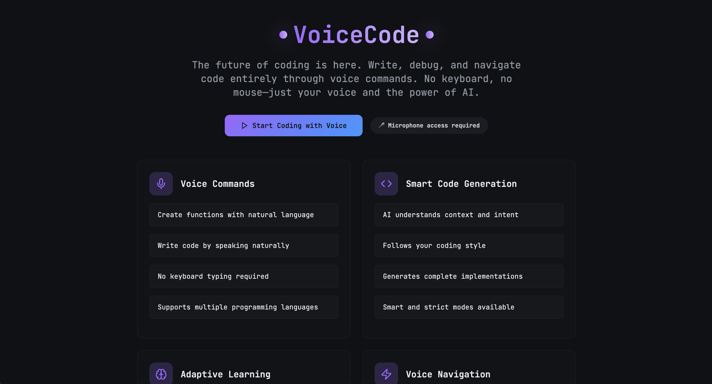
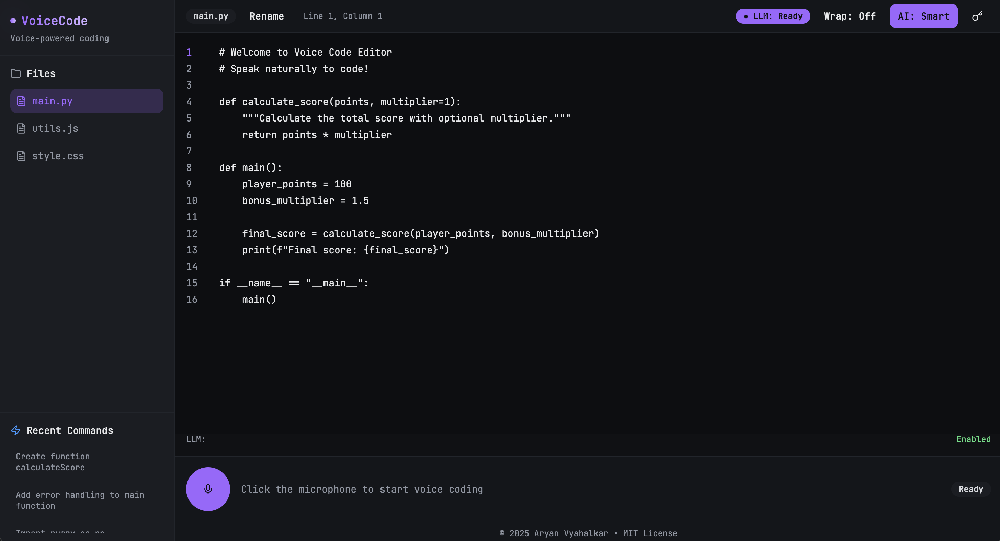

🎙️
VoiceCode
What
A voice-controlled code editor that lets you write and edit code without touching a keyboard. Speak your code, and it appears. Tell it to fix something, and it does.
Built as an experiment to see if coding with your voice could actually work and from a half-baked idea from my professor. The assumption: if speech-to-text can handle documentation, it can handle logic too.
I implemented dual-mode LLM parsing (strict vs. smart), built fallback logic between Groq and OpenAI APIs, and designed real-time voice command processing with visual feedback that doesn't get in the way.
Source code
This is the landing page. Four feature cards (and example voice commands below it) that explain what the system does: voice commands for natural language input, smart code generation that understands context, adaptive learning that improves over time, and voice navigation to move through your codebase without clicking.

The editor interface is where it all happens. Left sidebar shows your file tree. And in this case:
root/
|__main.py
|__utils.js
|__style.css
The main area is a syntax-highlighted editor with line numbers and proper Python formatting. Top right corner shows two status indicators:
- "LLM: Ready" in purple means the AI is connected and waiting
- "AI: Smart" means you're in smart mode where the system infers intent instead of executing commands literally.

Bottom of the screen is the voice control panel. A purple microphone button sits ready with the text "Click the microphone to start voice coding" and a "Ready" status on the right. The LLM status shows "Enabled" in green.
When you click that mic, the whole system listens. Speak a command, and the code appears in the editor above. No typing, no clicking through menus, just voice to code.
Case Study
There are assignments you complete, and there are assignments that stay with you long after you’ve submitted them. VoiceCode began as the latter, though at the time I didn’t know it.
It arrived unannounced, the way that most meaningful things often do, a bonus task assigned by a professor, after I’d finished my work early.
He told me to check the privatized assignment only after watching me help a classmate, as if he had been waiting for the right moment to ask something more of me.
The instructions were quite brief and it left a lot of creative ideas on the table: “Build a web app that can help physically impaired programmers.”
But, the story behind it was not. His 12-year-old niece, already drawn to computers, had lost one of her hands in a car accident. She wanted to keep learning, and he wanted to give her a chance.
And like that, the assignment stopped being an assignment.
I began building VoiceCode a week before I flew to India, working in the hotel room and even on the plane. Now this was past the fact that there was a deadline. This assignment wasn't even mandatory, yet I was compelled by this sense of obligation that I couldn't quite explain.
Perhaps it was because I understood what it meant to lose access to something you once took for granted. Not a hand, but a country. Not a limb, but a system. The mechanics differ, but the experience of displacement remains familiar.
Context
VoiceCode started as an answer to a very simple question: How do you help someone code when the physical act of typing has been taken from them?
I didn't have a straightforward answer.
But I could try to build a bridge.
The core idea was a voice-controlled IDE (later turned into a text-editor). Something that could transform spoken natural language into working code, navigate files, jump between lines, and open documents without needing two hands, or even one. The reason it was a text-editor and not a full-fledged IDE was because it wasn’t meant to be perfect; it was just meant to be possible.
Approach
The interface came first: a clean, unobtrusive environment built in React, TypeScript, TailwindCSS, and Vite. The backend was built in Node.js and Express.
Voice recognition alone wouldn't be enough, because people speak in intent, not syntax trees. So VoiceCode leaned on two tiers of AI: Groq’s Llama 3.3 70B and OpenAI’s GPT-4o-mini for NLP, taking it and transforming it into code.
A sprawling set of regex patterns acted as the scaffolding beneath the system, catching edge cases and preventing mistakes from compounding.
The user could say things like:
- "Open file utils.js."
- "Go to line thirty-four."
- "Create a function called merge arrays."
And VoiceCode would obey, not with the theatrical flourish of a novelty tool, but with the dignity of something built for real-world use.
Challenges
And there's a lot
The Web Speech API is inconsistent. Chrome handles it well, Safari doesn't, and Firefox is hit or miss. Building cross-browser support meant implementing detection logic and graceful degradation for browsers that couldn't handle continuous recognition.
But perhaps that inconsistency reveals something larger. Technology promises universality while delivering fragmentation. Each browser becomes its own gatekeeper, deciding who gets access and who doesn't.
LLM prompt engineering was the real bottleneck. Getting the model to generate syntactically correct code from natural language took dozens of iterations. Early versions would return explanations instead of code, or wrap everything in markdown blocks that broke the editor. I had to fine-tune system prompts to enforce strict JSON responses with executable code only.
Latency was another problem. Voice commands need to feel instant, but API calls to Groq or OpenAI can take 1-2 seconds. I added optimistic UI updates and streaming responses where possible, but there's still a noticeable delay on complex commands. Caching common patterns helped, but didn't solve it completely.
The dual-mode system (strict vs. smart) introduced complexity. Deciding when to use which mode, and how to make that decision transparent to the user without cluttering the interface, required multiple design iterations.
Smart mode is powerful but unpredictable.
Strict mode is reliable but requires precise phrasing.
Finding the balance took more time than expected. And in that balance, I suppose, lies a lesson about systems in general. They demand precision from those who can least afford to give it.
Outcome
The web app works. You can write real code with your voice. Smart mode handles context well, strict mode gives you full control, and the interface doesn't fight you.
This was my first time building something that bridges speech recognition with code generation at this level, and it turned out solid.
The hardest part wasn't the AI or the voice API. It was tuning the prompts so the LLM generated code that felt natural, not robotic. That took more iterations than the actual editor logic.
I submitted the project and my professor showed it to his niece. I don't know if she uses it. I don't know if it helped. But I know I built it, and that was enough.
Sometimes you build things not because they will change the world, but because they might change one person's relationship to it.
Tech Stack
Frontend
- React 18 with TypeScript
- Vite (build tool)
- Tailwind CSS + PostCSS
- shadcn/ui components
APIs
- OpenAI API (for LLM code generation)
- Groq API (alternative LLM provider)
- Web Speech API / MediaRecorder (voice input)
Deployment + dev tools
- Vercel
- ESLint
- Node.js environment